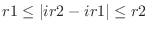
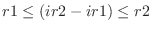

Next: Restraints.make_distance() make Up: The Restraints class: static Previous: Restraints.symmetry.report() report Contents Index
This command calculates and selects new restraints of a specified type. See the original papers for the most detailed definition and description of the restraints [Šali & Blundell, 1993,Šali & Overington, 1994]. The calculation of restraints of all types is now (partly) limited to the atoms in the atom selection atmsel. The new restraints are added to any currently present.
The physical restraint type of the new restraints is specified by restraint_group, and should be an object from the physical module (see Table 6.1).
restraint_type selects the types of the generated restraints. (For restraint type DISTANCE, do not use this command; instead, use Restraints.make_distance().) Only one restraint type can be selected at a time, except for the stereochemical restraints (BOND, ANGLE, DIHEDRAL, IMPROPER) that can all be calculated at the same time. It is useful to distinguish between the stereochemical restraints and homology-derived restraints. The stereochemical restraints are obtained from libraries that depend on atom and/or residue types only (e.g., CHARMM 22 force field [MacKerell et al., 1998] or statistical potentials), and do not require the alignment aln with template structures. In contrast, the homology-derived restraints are calculated from related protein structures, which correspond to all but the last sequence in the alignment aln (the target). These templates are read from coordinate files, which are the only data files required. All restraints are added to the existing restraints, even if they duplicate them (but see the comment for the 'OMEGA' restraints below).
The atoms for non-bonded restraints also have to be within the residue spanning range specified by residue_span_range = (r1, r2), such that the residue index difference  when residue_span_sign = False and  when residue_span_sign = True.
Stereochemical restraints:
When intersegment is True, the inter-segment non-bonded restraints are also constructed; otherwise, the segments do not feel each other via the non-bonded restraints. This option does not apply to the optimizers (Section 6.11) where information about segments is not used at all (i.e., they behave as if intersegment = True).
Homology-derived restraints:
For these restraints, the input alignment aln must be given.
When MODELLER's 'OMEGA' restraints are calculated, the currently existing restraints on atoms 'O C +N +CA' in all residues are automatically deleted. These deleted restraints correspond to the improper dihedral angles involving the ω atoms. They are deleted because they could be “frustrated” by the new 'OMEGA' restraints. No action is taken with regard to any of the previously existing, possibly duplicated dihedral angle restraints. Thus, to avoid restraint duplication, including that of the 'OMEGA' restraints, call the Restraints.unpick_redundant() command after all the restraints are calculated.
Dihedral restraints are only calculated for the 20 standard amino acids, plus the two alternate histidine protonation states (HSE and HSP). The statistics for HIS are applied to HSE and HSP.
The weights of basis pdf's depend on local sequence similarity between the target and the templates when basis_pdf_weight = 'LOCAL' and on global sequence identity when basis_pdf_weight = 'GLOBAL'.
basis_relative_weight is the cutoff for removing weak basis pdf's from poly-Gaussian feature pdf's: a basis pdf whose weight is less than the basis_relative_weight fraction of the largest weight is deleted.
If spline_on_site is True, then certain dihedral restraints are automatically replaced by splines for efficiency. See Restraints.spline() for a description of the spline_dx, spline_min_points, and spline_range parameters.
Several restraint types look up information from pre-calculated MDT tables, and for these the accessibility_type variable defines the type of solvent accessibility.
# Example for: restraints.make(), restraints.spline(), restraints.write() # This will compare energies of bond length restraints expressed # by harmonic potential and by cubic spline. from modeller import * from modeller.scripts import complete_pdb log.verbose() env = Environ() env.io.atom_files_directory = ['../atom_files'] env.libs.topology.read(file='$(LIB)/top_heav.lib') env.libs.parameters.read(file='$(LIB)/par.lib') code = '1fas' mdl = complete_pdb(env, code) mdl.write(file=code+'.ini') sel = Selection(mdl) mdl.restraints.make(sel, restraint_type='bond', spline_on_site=False) mdl.restraints.write(file=code+'-1.rsr') edat = EnergyData(dynamic_sphere=False) sel.energy(edat=edat) mdl.restraints.spline(forms.Gaussian, features.Distance, physical.bond, spline_range=5.0, spline_dx=0.005, edat=edat) mdl.restraints.condense() mdl.restraints.write(file=code+'-2.rsr') sel.energy(edat=edat)